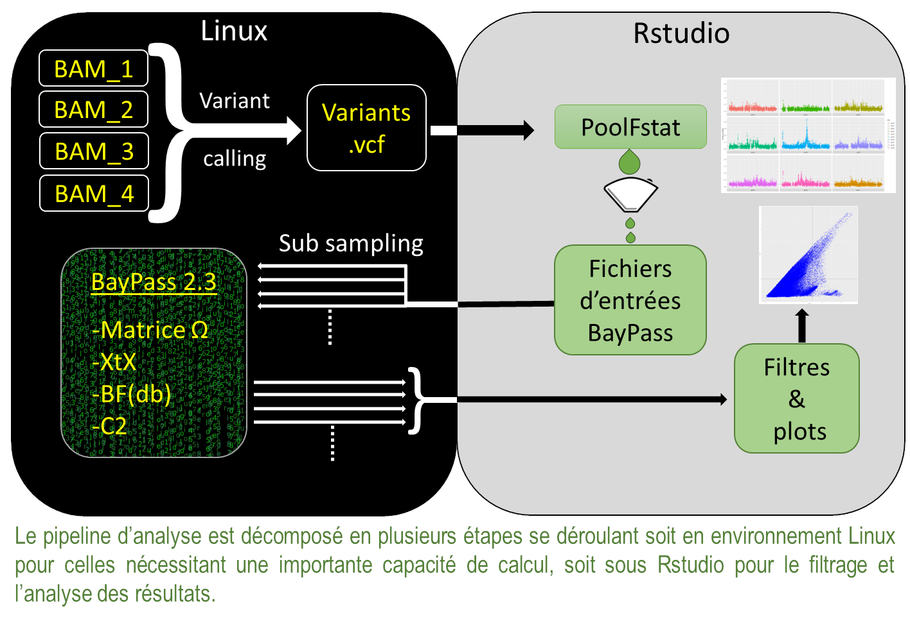

Présentation du logiciel BayPass 2.3
Le logiciel BayPass est un logiciel de génomique des populations qui vise principalement à l’identification de marqueurs génétiques soumis à la sélection et/ou associés à des covariables spécifiques à la population (variables environnementales, phénotypiques, quantitatives, catégorielles…). Par une approche baysienne il évalue une matrice Ω de covariance des fréquences alléliques des populations résultant de leur histoire démographique. Deux manières d’estimer ces fréquences alléliques sont disponibles soit en se basant sur les génotypes référence/mutant des individus analysés soit, lorsque l’on active le « pool-seq mode », ces fréquences alléliques sont calculées en regard de la profondeur de séquençage (reads count) et pondérées par le nombre d’individus qui ont contribué à cette profondeur. C’est cette seconde approche que nous considérerons dans cet ouvrage.
BayPass propose 3 modèles statistiques d’analyse :
Le Core Model
C’est le modèle de base, il permet de calculer la matrice de covariance Ω et d’attribuer une statistique de différenciation XtX à chaque SNP, et ainsi de scanner le génome pour identifier les régions génomiques différenciées entre les populations.Le XtX est une statistique analogue au Fst mais tient compte de la co-évolution des populations grace à la matrice Ω.
Le Standard Model
Ce modèle, permet, l’orsque l’on fournit une ou plusieurs covariables (environnementales, phénotypiques…), de calculer un facteur de Bayes, ou Bayes factor en anglais, (BF) pour chaque marqueur génétique représentant la force d’association avec une covariable. C’est un modèle tout en un qui intègre le calcul des XtX et de la matrice Ω, il est adapté au faible nombre de population (< 15).
L’Auxiliairy Model
Ce modèle a une approche différente dans le calcul de la statistique BF, sans entrer dans le détail il est plus adapté au grand nombre de population (> 15), En contrepartie il nécessite que l’on fournisse une matrice Ω déjà calculée par une analyse Core Model précédente, il recalcule alors les XtX et la statistique BF.
Ces covariables évoquées doivent être distribuées en gradient entre les populations (différence de température, d’altitude…), en complément, dans le cas où la covariable étudiée serait purement binaire (sensible/résistant, gros/petit…), les modèles Standard et Auxiliaire peuvent calculer une statistique C2 qui évalue le contraste de différence des fréquences alléliques de chaque marqueur entre 2 groupes de populations.
Présentation générale de l’analyse :
La figure 1 est une vision simplifiée des différentes étapes nécessaire à l’analyses de données poolseq. Ces étapes se déroulent soit dans l’environnement Linux du cluster de calcul soit sur un ordinateur local sous Rstudio. La première étape part d’un fichier d’alignement au format « .bam » et consiste à effectuer une recherche de variants (variant calling) pour obtenir un fichier au format « .vcf » de tous les points de mutations ou SNP qui sont autant de marqueurs génétiques à analyser. Ce fichier .vcf sert d’entrée au package « PoolFstat » qui va permettre de générer les fichiers nécessaires au bon fonctionnement de BayPass mais aussi de faire une première analyse des Fst entre populations par exemple. Ces fichiers d’entrées pouvant contenir plusieurs millions de SNP, ils sont découpés en plusieurs dizaines de sous jeux de données afin de réduire les temps de calculs. Une fois que BayPass a analysé tous les sous jeux de données, l’homogénéité des résultats entre eux est analysée sous Rstudio et si tout est bon, les résultats peuvent être regroupés, filtrés et analysés afin de déterminer les marqueurs génétiques et les régions chromosomiques d’intérêts.
